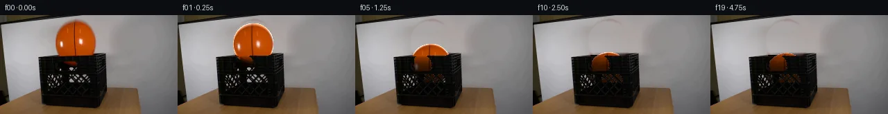

![首帧]()

Round 00
2026-11-05T04:33:32.706753+00:00像素候选变化代码 +258/−0inspection 更新
pixels 360dacccc270a8dd · code 14873678fbd855a3
查看本轮 generate.py 真实 diff
--- previous/generate.py
+++ current/generate.py
@@ -0,0 +1,258 @@
+"""PixelWorld vision-agent generation for case_0015.
+
+Scene: orange basketball released over a black plastic crate; it drops into
+the crate, bounces twice and settles. Locked-off camera, 20 frames @ 4 fps.
+
+Frame 00 is the verbatim first_frame.png. Frames 1-19 are produced locally by
+2D pixel operations: a static background plate (ball inpainted out), a full
+sphere sprite completed from the observed cap, analytic drop/bounce physics
+and compositing of the ball above the rim and (dimmed) through the crate's
+handle slot and diamond lattice openings.
+"""
+from pathlib import Path
+import numpy as np
+from PIL import Image, ImageDraw, ImageFilter
+from scipy.spatial import cKDTree
+from scipy.ndimage import binary_erosion
+
+import artifact_io
+
+WS = Path(__file__).resolve().parent
+FRAME0 = np.asarray(Image.open(WS / "first_frame.png").convert("RGB"))
+H, W = 144, 256
+
+# ---- scene constants (from measurements, see OBSERVATION.md) ----------------
+CX, CY0, R = 109.0, 38.0, 28.5
+CY_REST = 84.0
+G, E, DT = 110.0, 0.58, 0.25
+RIM = {56: 61, 68: 60, 74: 59, 86: 60, 92: 60, 104: 59, 128: 59, 134: 57, 140: 56, 146: 58}
+# dimming of ball color as a function of absolute image y (interior shadow)
+DIM_KNOTS = {58: 1.00, 60: 0.85, 62: 0.72, 65: 0.60, 68: 0.48,
+ 72: 0.36, 77: 0.28, 84: 0.24, 130: 0.22}
+
+
+def rim_y(x):
+ xs = sorted(RIM)
+ if x <= xs[0]:
+ return RIM[xs[0]]
+ for a, b in zip(xs, xs[1:]):
+ if a <= x <= b:
+ t = (x - a) / (b - a)
+ return RIM[a] + t * (RIM[b] - RIM[a])
+ return RIM[xs[-1]]
+
+
+def dim_factor(y):
+ ys = sorted(DIM_KNOTS)
+ if y <= ys[0]:
+ return DIM_KNOTS[ys[0]]
+ for a, b in zip(ys, ys[1:]):
+ if a <= y <= b:
+ t = (y - a) / (b - a)
+ return DIM_KNOTS[a] + t * (DIM_KNOTS[b] - DIM_KNOTS[a])
+ return DIM_KNOTS[ys[-1]]
+
+
+# ---- 1. static plate: ball removed from frame 0 -----------------------------
+def build_plate_and_masks():
+ f = FRAME0.astype(np.float32)
+ lum = f @ np.array([0.299, 0.587, 0.114], np.float32)
+ yy, xx = np.mgrid[0:H, 0:W]
+
+ # wall reference colors per row (left / right strips)
+ wall_fill = np.zeros_like(f)
+ for y in range(6, 60):
+ xl0, xl1 = (62, 75) if y < 52 else (62, 72)
+ xr0, xr1 = (140, 149) if y < 53 else (138, 142)
+ cl = np.median(f[y, xl0:xl1], axis=0)
+ cr = np.median(f[y, xr0:xr1], axis=0)
+ xa, xb = 76, 141
+ for x in range(xa, xb):
+ t = (x - xa) / (xb - xa)
+ wall_fill[y, x] = cl * (1 - t) + cr * t
+
+ # ball + halo footprint above rim
+ circ31 = (xx - CX) ** 2 + (yy - CY0) ** 2 <= 31.0 ** 2
+ foot = circ31 & (yy <= 58)
+ wall_est = wall_fill
+ dist = np.abs(f - wall_est).sum(axis=2)
+ foot = foot & (dist > 12)
+ # only replace pixels that actually look like ball/halo (guard rim corners)
+ ballish = (f[:, :, 0] > f[:, :, 1] + 12) | (lum < 120)
+ # near-silhouette halo pixels are blends with wall -> include by geometry
+ foot = foot & (ballish | (((xx - CX) ** 2 + (yy - CY0) ** 2) <= 29.0 ** 2))
+
+ layer = f.copy()
+ layer[foot] = wall_fill[foot]
+ layer_img = Image.fromarray(layer.clip(0, 255).astype(np.uint8))
… diff truncated; 171 more lines …